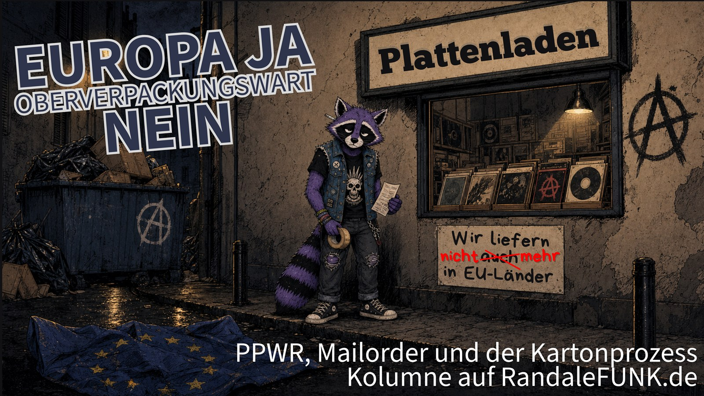

Kolumne
Europa ja, Oberverpackungswart nein
Über die EU-Verpackungsverordnung PPWR, Punk-Mailorder, Bürokratie und die Frage, wann ein Karton politisch wird.
Kolumne anhören
Audio: KI-Version meiner eigenen Stimme · Text & Redaktion: Burg

Ich wollte eigentlich nur einen Karton verschicken.
Also nicht ich persönlich gerade jetzt. Aber stellen wir uns kurz diesen Menschen vor, den es in unserer Szene wirklich gibt: kleiner Punk-Mailorder, Mini-Label, DIY-Shop, irgendwas zwischen Küchentisch, Kellerregal und „ich mache das nach Feierabend noch schnell fertig“.
Da liegt eine Platte. Oder ein Shirt. Oder ein Fanzine. Daneben ein Karton, ein bisschen Füllmaterial, Klebeband, Rechnung, Adresse, fertig.
Eigentlich eine einfache Sache.
Dann kommt Europa um die Ecke, trägt einen Aktenordner unter dem Arm und fragt: Bist du Hersteller, Erzeuger, Befüller, Vertreiber, Importeur, Wirtschaftsakteur oder nur der traurige Typ mit dem Paketband?
Und genau da wird es interessant.
Denn es geht um die PPWR. Das ist die neue EU-Verpackungsverordnung. Vollständig: Verordnung (EU) 2025/40 über Verpackungen und Verpackungsabfälle.
Klingt schon wie ein Bassintro von einer Band, die auf keinen Fall einen Refrain schreibt.
Die Verordnung gilt seit dem 12. August 2026 grundsätzlich unmittelbar in der EU. Nicht alles davon knallt sofort am ersten Tag auf den Tisch. Viele Pflichten greifen gestaffelt, manches kommt erst später, einige Details brauchen noch Durchführungsrechtsakte, Leitlinien und Auslegung.
Wahrscheinlich auch einen Kaffee und einen Menschen, der beruflich sehr gern Tabellen liest.
Gute Idee, großer Karton
Die Grundidee ist trotzdem nicht bescheuert.
Weniger Verpackungsmüll? Ja, bitte.
Bessere Recyclingfähigkeit? Klar.
Weniger überdimensionierte Kartons, in denen eine einzelne Zahnbürste herumliegt wie ein verlorener Bassist in einer leeren Sporthalle? Unbedingt.
Mehr Wiederverwendung, klarere Verantwortung, weniger Wegwerfgedöns? Da bin ich dabei.
Ich bin nicht gegen Umweltschutz. Ich bin auch nicht gegen Europa. Im Gegenteil. Der europäische Gedanke ist mir deutlich lieber als dieses nationalistische „Wir kochen wieder unsere eigene Suppe und wundern uns dann, dass sie nach 1933 schmeckt“.
Europa kann eine verdammt gute Idee sein.
Zusammenarbeit statt Kleinstaaten-Ego. Gemeinsame Standards statt jeder macht sein eigenes Plastikfeuer. Freizügigkeit, Handel, gemeinsame Lösungen für Probleme, die nun mal nicht an der Grenze anhalten und höflich fragen, ob sie weiterdürfen.
Aber eine gute Idee kann durch schlechte Umsetzung trotzdem zur Zumutung werden.
Und genau da sitzt für mich das Problem.
Es geht nicht darum, Verpackungsmüll kleinzureden. Der ist ein Problem.
Es geht auch nicht darum, Versandhandel aus jeder Verantwortung zu entlassen.
Es geht darum, ob ein Regelwerk so gebaut werden darf, dass große Unternehmen dafür eine Abteilung aufmachen und kleine Strukturen nachts um halb eins mit kaltem Kaffee vor EU-Leitfäden sitzen und überlegen, ob ihr Punkshop gerade versehentlich zur Verpackungsindustrie geworden ist.
Küchentisch gegen Compliance
Amazon hat Compliance.
Der Punk-Mailorder hat einen Küchentisch.
Zalando hat Juristen.
Das Mini-Label hat drei Kartons hinterm Sofa, eine Rolle Klebeband, einen Drucker, der nur funktioniert, wenn man ihn vorher beleidigt, und einen Menschen, der morgen früh wieder zur Arbeit muss.
Natürlich wäre es falsch zu behaupten, kleine Shops hätten einfach eins zu eins dieselben Pflichten wie Konzerne. So schlicht ist es nicht. Es gibt Ausnahmen, Erleichterungen und Sonderregeln, gerade auch für Kleinstunternehmen.
Aber auch das zeigt schon das Problem.
Wenn ich erst erklären muss, unter welchen Bedingungen eine Ausnahme greift, wer in welchem Mitgliedstaat sitzt, welche Rolle ein Unternehmen gerade einnimmt und welcher Absatz dafür zuständig ist, dann ist Komplexität längst selbst zur Belastung geworden.
Nicht, weil die Regel böse gemeint ist.
Sondern weil kleine Strukturen keine Verwaltung haben.
Für große Unternehmen ist Bürokratie ein Prozess. Da gibt es Zuständigkeiten, Software, Beratung, Schulungen, externe Dienstleister und Menschen, die Sätze wie „Wir müssen die neuen Konformitätsanforderungen ins operative Reporting überführen“ sagen können, ohne sich danach direkt ins Meer legen zu wollen.
Für kleine Läden ist Bürokratie Zeit.
Und Zeit ist dort keine abstrakte Ressource.
Zeit ist der Abend, an dem eigentlich zehn Bestellungen raus sollten. Das Wochenende, an dem ein neues Tape online gehen sollte. Oder irgendwann schlicht der Moment, in dem jemand sagt: Weißt du was? Dann lasse ich den Shop eben.
Und das wäre ein Verlust.
Nicht für Amazon.
Für uns.
Für die Szene.
Für die kleinen Strukturen, die nicht deshalb wichtig sind, weil sie riesige Umsätze machen, sondern weil sie Kultur am Laufen halten. Weil sie Platten verschicken, die kein Algorithmus nach vorne spült. Weil sie Shirts von Bands verkaufen, die nicht bei großen Plattformen unterkommen. Weil sie Fanzines, Tapes, Demos, Solikram und diesen ganzen schönen, schiefen, unbequemen Kram durch die Gegend schicken.
Wenn so jemand wegen Verpackungsrecht aufgibt, verschwindet der Konsum nicht.
Die Leute kaufen nur woanders.
Wahrscheinlich bei genau den Plattformen, die mit solchen Regelwerken besonders gut umgehen können.
Herzlichen Glückwunsch. Ökologisch vielleicht gut gemeint, strukturell aber wieder ein kleines Geschenk an die Großen.
Regelfähig
Und ja, bevor jemand mit erhobenem Zeigefinger durch die Tür kommt: Regeln müssen auch für Kleine gelten.
Natürlich.
Sonst haben wir am Ende wieder diese Nummer, bei der jeder sagt: Mein Beitrag ist so klein, der zählt nicht. Und plötzlich stehen wir bis zum Hals in Luftpolsterfolie und nennen es Markt.
Darum geht es nicht.
Es geht um Verhältnismäßigkeit.
Regeln müssen nach Größe, Menge, Risiko und realer Marktmacht skalieren. Wer Millionen Pakete verschickt, soll anders behandelt werden als jemand, der im Monat ein paar Platten, Shirts oder Patches eintütet.
Nicht regelfrei.
Aber regelfähig.
Ein kleiner Shop braucht keine Auslegungsakrobatik.
Er braucht klare Antworten:
Was muss ich tun?
Was muss ich nicht tun?
Wo melde ich mich?
Welche Verpackung darf ich nutzen?
Welche Nachweise brauche ich wirklich?
Und ab welcher Menge wird es ernst?
Das müsste so einfach sein, dass man es nach Feierabend versteht, ohne vorher eine Fortbildung zum amtlich geprüften Oberverpackungswart zu machen.
Leitlinien zum Leitfaden
Selbst die EU-Kommission hat 2026 Leitlinien zur PPWR veröffentlicht, nachdem von Mitgliedstaaten, Behörden und Unternehmen zahlreiche Fragen aufgekommen waren.
Das heißt natürlich nicht automatisch, dass die ganze Verordnung unbrauchbar ist.
Es zeigt aber ziemlich schön: Selbsterklärend ist das Ding offenbar nicht einmal für Leute, die beruflich mit solchen Regeln zu tun haben.
Und wenn schon Behörden, Verbände und Unternehmen nachfragen müssen, was genau gemeint ist, dann kann man von einem Punkshop im Keller schlecht erwarten, dass er sich da mal eben gemütlich durchbeißt, während im Hintergrund der Paketdrucker blinkt.
Das ist der Moment, in dem ich an Martin Sonneborn denken muss.
Nicht als Fachmann für Verpackungsrecht. Um Gottes willen.
Wenn ich fachliche Beratung brauche, frage ich nicht zuerst einen Satiriker, der Europa seit Jahren wie ein schlecht verschraubtes IKEA-Regal vorführt.
Aber als Messgerät für institutionelle Absurdität funktioniert Sonneborn ganz gut.
Immer wenn europäische Politik so wirkt, als hätten fünf Ausschüsse, acht Berichterstatter, drei Lobbyrunden und ein Praktikant mit Word-Formatierungsproblemen gemeinsam versucht, ein echtes Problem zu lösen, hört man innerlich irgendwo Sonneborn leise lachen.
Und dieses Lachen ist nicht europafeindlich.
Es ist ein Warnsignal.
Europa wird nicht dadurch stärker, dass jede Kritik an EU-Bürokratie sofort in die rechte Mottenkiste geschoben wird.
Genau das wäre falsch.
Rechte Kräfte wollen Europa zerlegen, weil sie Nationalismus geil finden.
Ich will Europa behalten, gerade weil ich Nationalismus gefährlich finde.
Aber wer Europa verteidigen will, muss auch sagen dürfen, wenn europäische Regulierung kleine Leute überfordert.
Sonst überlassen wir die Kritik denen, die aus jedem Formular gleich den Untergang des Abendlandes basteln.
Und darauf habe ich keinen Bock.
Der Kartonprozess
Die PPWR zeigt für mich ein größeres Problem: Politik denkt gerne in Systemen, Märkten, Sektoren und „Wirtschaftsakteuren“.
Auf dem Papier ist der globale Versandkonzern genauso Versandhandel wie der Mensch, der nach der Spätschicht noch fünf LPs in gebrauchte Kartons packt, weil Wegwerfen dumm ist und neue Kartons Geld kosten.
In der Realität liegen da Welten dazwischen.
Genau diese Realität muss Regulierung sehen.
Sonst werden aus ökologischen Ideen Bürokratie-Minenfelder.
Dann steht am Ende nicht weniger Müll im Hof, sondern weniger DIY in der Landschaft.
Also, liebe EU: Macht Verpackungsmüll kleiner. Sehr gerne.
Macht Verpackungen recyclebarer. Bitte.
Zwingt Konzerne dazu, ihre absurd aufgeblasenen Versandkartons einzudampfen. Von mir aus mit Sirene, Bußgeld und einem Sachbearbeiter, der jeden Morgen „Leerraumquote“ in eine Tasse brüllt.
Aber wenn ihr kleine Läden, Labels und Mailorder mitnehmen wollt, dann baut Regeln, die sie auch verstehen und erfüllen können.
Echte Bagatellgrenzen.
Einfache Checklisten.
Einheitliche Verfahren.
Klare Zuständigkeiten.
Keine 27-Portale-Hölle für Menschen, die eigentlich nur ein Tape nach Belgien schicken wollen.
Und vor allem: weniger institutionelles Selbstbeschnuppern.
Denn ja:
Fickt eure Bürokratie.
Nicht Europa.
Nicht Umweltschutz.
Nicht Recycling.
Nicht Verantwortung.
Fickt die Idee, dass jedes echte Problem erst dann gelöst ist, wenn man es in ein Regelwerk verwandelt hat, bei dem kleine Punkshops sich fühlen wie Angeklagte im Kartonprozess.
Ich will weniger Müll.
Ich will mehr Europa.
Ich will, dass die Großen stärker in die Pflicht genommen werden.
Und ich will, dass der kleine Mailorder am Küchentisch nicht daran kaputtgeht, dass er versucht, alles richtig zu machen.
Wenn eine Verordnung am Ende dazu führt, dass die Großen sie wegverwalten und die Kleinen davor kapitulieren, dann ist nicht der Karton das Problem.
Dann ist die Verpackung der Bürokratie zu groß.
Nachtrag vom 17.08.2026
Nachtrag zur Kolumne:
Einen Punkt habe ich beim Schreiben tatsächlich versäumt: Ich habe nicht nachgesehen, wer diesem Ding eigentlich zugestimmt hat.
Hätte ich mal machen sollen.
Gerade von den Parteien, die ich politisch eher links verorte, bin ich ziemlich enttäuscht. Deutsche Abgeordnete von SPD, Grünen und Linken - und selbst Martin Sonneborn - haben der Verpackungsverordnung im EU-Parlament zugestimmt.
Und nein: Das macht die AfD oder irgendwelche anderen rechten Vögel plötzlich nicht zu meinen Freunden, nur weil sie bei dieser Abstimmung dagegen waren. So billig funktioniert Politik dann auch wieder nicht.
Aber wenn diejenigen, von denen ich eigentlich mehr Blick für kleine Strukturen, Kleinstunternehmen und DIY erwarte, bei so einem Bürokratiemonster auf „Ja“ drücken, darf man ihnen das auch gepflegt vor die Füße kotzen.
Ich bleibe dabei:
Europa? Ja.
Umweltschutz? Ja.
Kleine Punkshops mit Verwaltungsirrsinn zuscheißen? Nein.
Und wer immer noch glaubt, Demokratie bedeute automatisch, dass am Ende vernünftige Entscheidungen herauskommen, hat sowieso einen Vogel.
Mehrheitsfähig ist schließlich nicht dasselbe wie vernünftig.
Quellencheck: Geprüft über die Verordnung (EU) 2025/40 bei EUR-Lex, die Übersicht der EU-Kommission zu Verpackungsabfällen, die Kommissionsleitlinien zur PPWR von 2026, die FAQ der EU-Kommission zur PPWR, die offiziellen Abstimmungsergebnisse zur Plenarsitzung vom 24.04.2024 und die auf offiziellen EU-Daten basierende namentliche Abstimmungsübersicht bei HowTheyVote. Bewertungen, Wut und Oberverpackungswart sind Kolumne.